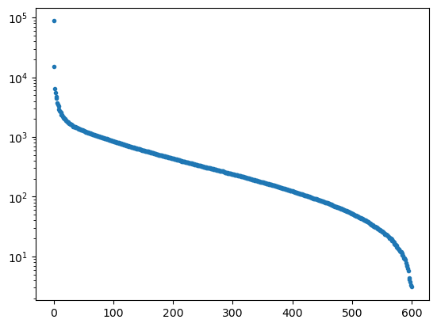

Matrix Decompositions
Matrix Decompositions#
A huge number of mathematical computing problems end up with a matrix description or a set of linear equations. From the numerical solution of ODEs and PDEs (see MT4xxx and MT5846), to adjacency matrices of graphs (see MT4514), to approximation of functions (see Chapter 3) and data analysis, dealing with linear systems is a fundamental part of computational mathematics.
For this section, let us simply consider a matrix equation
\[ A\mathbf{x} = \mathbf{b} \]
where \(A\) is an \(N\times N\) matrix, \(\mathbf{x}\) a \(N\)-dimensional vector of unknowns, \(\mathbf{b}\) a similar vector of knowns. The problem of finding \(\mathbf{x}\) is
from scipy import linalg
import numpy as np
rng = np.random.default_rng()
A = rng.random((10,10)) # random matrix
A = A*np.transpose(A) # make symmetric
lam,v,w = linalg.eig(A, left=True, right=True)
A_check = v@np.diag(lam)@linalg.inv(v)
lam
array([ 3.02515136+0.j, 1.18352992+0.j, -1.35579685+0.j, -1.20150945+0.j,
0.75245235+0.j, 0.55902311+0.j, -0.67251723+0.j, 0.0899611 +0.j,
-0.2560698 +0.j, -0.15654666+0.j])
import imageio.v2 as imageio
# Load the image
img = imageio.imread('images/test2.jpg')
g_img = img[:,:,0] * 299/1000 + img[:,:,1] * 587/1000 + img[:,:,2] * 114/1000
#imageio.imsave('images/gray_test.jpg', g_img)
---------------------------------------------------------------------------
ModuleNotFoundError Traceback (most recent call last)
Input In [4], in <cell line: 1>()
----> 1 import imageio.v2 as imageio
2 # Load the image
3 img = imageio.imread('images/test2.jpg')
ModuleNotFoundError: No module named 'imageio'
import matplotlib.image as mpimg
img = mpimg.imread('images/test2.jpg')
def rgb2gray(rgb):
r, g, b = rgb[:,:,0], rgb[:,:,1], rgb[:,:,2]
gray = 0.2989 * r + 0.5870 * g + 0.1140 * b
return gray
g_img = rgb2gray(img)
import matplotlib.pyplot as plt
plt.figure()
plt.imshow(img[:,:,:],cmap="gray")
plt.figure()
plt.imshow(g_img,cmap="gray")
<matplotlib.image.AxesImage at 0x7fbb1a77ce80>
u, s, vh = np.linalg.svd(g_img, full_matrices=False)
plt.figure()
plt.semilogy(s,'.')
plt.show()

rng = np.random.default_rng()
eps = 1.00
s_noised = np.zeros_like(s)
for i,si in enumerate(s):
#print(i,si)
if(si<1000):
s_noised[i] = si*eps*np.random.random()
else:
s_noised[i] = si
img_noised = np.array(np.dot(u_noised * s_noised, vh), dtype=int)
imageio.imsave('images/test_noisy.jpg', img_noised)
---------------------------------------------------------------------------
NameError Traceback (most recent call last)
Input In [8], in <cell line: 11>()
8 else:
9 s_noised[i] = si
---> 11 img_noised = np.array(np.dot(u_noised * s_noised, vh), dtype=int)
12 imageio.imsave('images/test_noisy.jpg', img_noised)
NameError: name 'u_noised' is not defined
f_img = np.fft.rfft2(g_img)
N,M = np.shape(f_img)
ph = 2*np.pi*np.random.rand(N,M)
f_img[2*N//4:,2*M//4:] = f_img[2*N//4:,2*M//4:]*np.exp(1j*ph[2*N//4:,2*M//4:])
img_fft_noise = np.fft.irfft2(f_img)
fig = plt.figure()
ax = fig.add_subplot(1, 2, 1)
imgplot = plt.imshow(g_img,cmap="gray")
ax.set_title('Before')
#plt.colorbar(ticks=[0.1, 0.3, 0.5, 0.7], orientation='horizontal')
ax = fig.add_subplot(1, 2, 2)
imgplot = plt.imshow(img_fft_noise,cmap="gray")
#imgplot.set_clim(0.0, 0.7)
ax.set_title('After')
#plt.colorbar(ticks=[0.1, 0.3, 0.5, 0.7], orientation='horizontal')
Text(0.5, 1.0, 'After')
u, s, vh = np.linalg.svd(img_fft_noise, full_matrices=False)
s_cleaned = np.zeros_like(s)
for i,si in enumerate(s):
#print(i,si)
if(si>500):
s_cleaned[i] = si
img_denoised = np.array(np.dot(u * s_cleaned, vh), dtype=int)
imageio.imsave('images/test_smooth.jpg', img_denoised)
---------------------------------------------------------------------------
NameError Traceback (most recent call last)
Input In [11], in <cell line: 10>()
8 s_cleaned[i] = si
9 img_denoised = np.array(np.dot(u * s_cleaned, vh), dtype=int)
---> 10 imageio.imsave('images/test_smooth.jpg', img_denoised)
NameError: name 'imageio' is not defined
fig = plt.figure()
ax = fig.add_subplot(1, 2, 1)
imgplot = plt.imshow(img_fft_noise,cmap="gray")
ax.set_title('Before')
#plt.colorbar(ticks=[0.1, 0.3, 0.5, 0.7], orientation='horizontal')
ax = fig.add_subplot(1, 2, 2)
imgplot = plt.imshow(img_denoised,cmap="gray")
#imgplot.set_clim(0.0, 0.7)
ax.set_title('After')
#plt.colorbar(ticks=[0.1, 0.3, 0.5, 0.7], orientation='horizontal')
Text(0.5, 1.0, 'After')